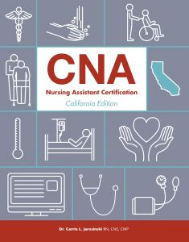
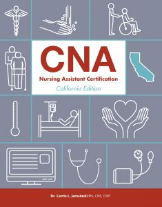

Karina Carrillo
Enter bio here
Enter bio here
My name is Karina Carrillo, I am a 4th year psychology major at UCR. I currently also work as a nursing assistant in a hospital and rehabiliation facility in Orange County. I am studying in hope to go to an MD or DO school and become a psychiatrist.
Through my work experience I have been able to learn a lot about working directly with a variety of patients and taking care of them. This has allowed me to gain a further compassion and understanding for the different people you might interact with in a hospital. It has also allowed me to closely work with nurses and hospital staff.
As a nursing assistant, I work directly with the patients to care for their needs, check their vital signs, help them with their Activities of daily living and report any emergencies to the nurses. I have been working as a nursing assistant for about 2 years, after recieving my license to become a CNA by taking a class and exam. This job experience can help me in the future to be more understanding and attentive to the patient's condition, as a nursing assistant's job involves more of a caregiver role, rather than medical.
Enter bio here
Experience
CNA
• Responsible for helping patients and nurses with their caregiving needs
• Taking vital signs of patients and making sure they are taken care of
Barista
• Made variety of tea and coffee drinks
• Took orders and made a pleasent customer experience
Education
UC Riverside
Portfolio


